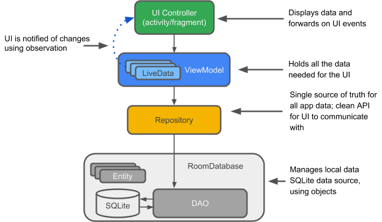
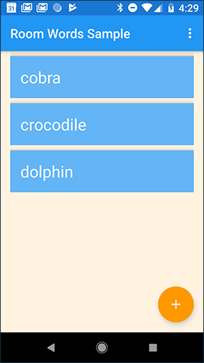
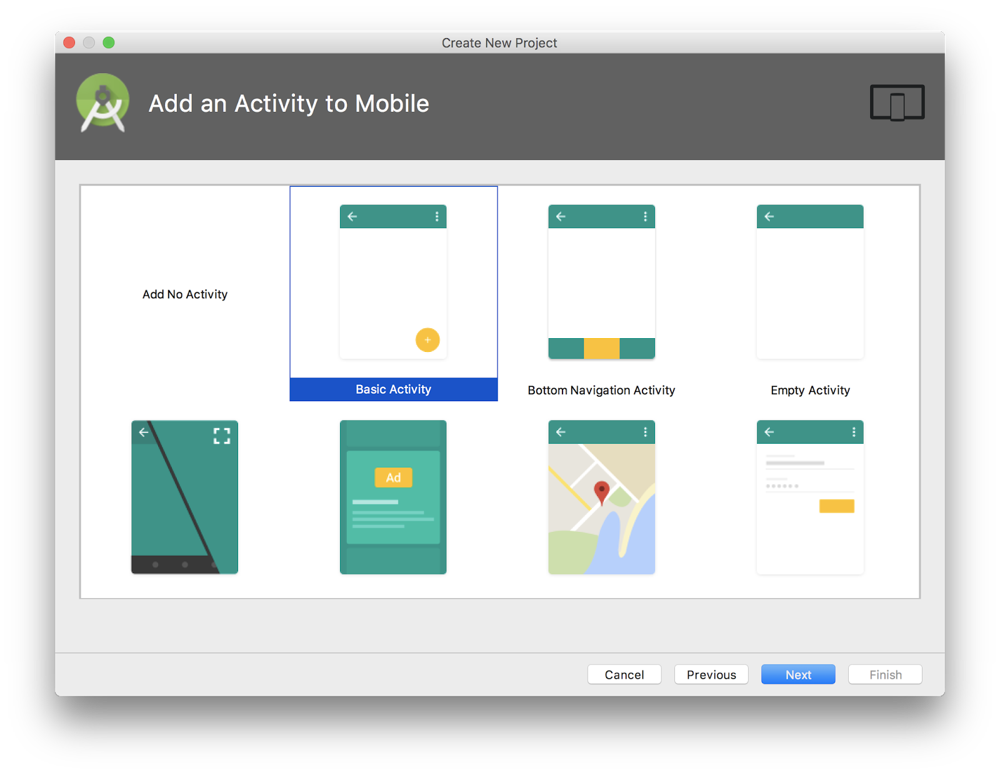
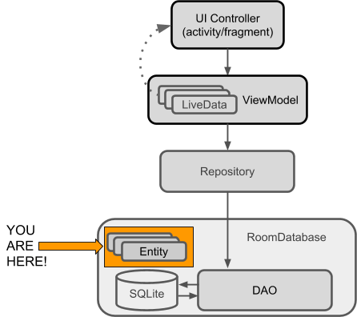
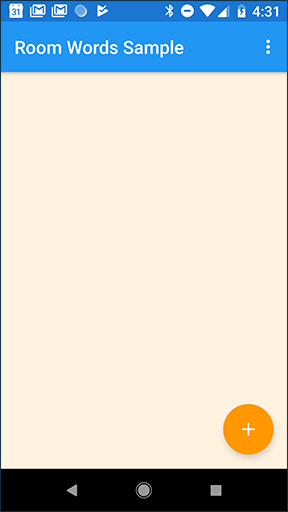

Le système d'exploitation Android fournit une base solide pour la création d'applications qui fonctionnent correctement sur une large gamme d'appareils et de facteurs de forme. Cependant, des problèmes tels que les cycles de vie complexes et l'absence d'une architecture d'applications recommandée compliquent la création d'applications robustes. Les composants d'architecture Android fournissent des bibliothèques pour les Etapes courantes, telles que la gestion du cycle de vie et la persistance des données, afin de faciliter la mise en œuvre de [architecture recommandée]. (https://developer.android.com/topic/libraries/architecture/guide.html).
Les composants d'architecture vous aident à structurer votre application de manière robuste, testable et maintenable avec moins de code standard.
Quels sont les composants d'architecture recommandés?
En matière d’architecture, il est utile de commencer par voir la situation dans son ensemble. Pour présenter la terminologie, voici un bref aperçu des composants d’architecture et de la manière dont ils fonctionnent ensemble. Chaque composant est expliqué plus que vous l'utilisez dans cette pratique.
Le diagramme ci-dessous présente une forme de base de l'architecture recommandée pour les applications utilisant des composants d'architecture. L'architecture est composée d'un contrôleur d'interface utilisateur, d'un ViewModel qui sertLiveData, d'un référentiel et d'une base de données Room. La base de données Room est soutenue par une base de données SQLite et accessible via un objet d'accès aux données (DAO). Chaque composant est décrit brièvement ci-dessous, et en détail dans le chapitre sur les concepts des composants d'architecture, 10.1: Stockage de données avec Room . Vous implémentez les composants dans cette pratique.

Étant donné que tous les composants interagissent, vous rencontrerez des références à ces composants tout au long de cette pratique. Voici donc une courte explication de chacun.
Entity: Dans le contexte des composants d'architecture, l'entité est une classe annotée qui décrit une table de base de données.
Base de données SQLite: Sur l'appareil, les données sont stockées dans une base de données SQLite. La Bibliothèque de persistance de la salle crée et maintient cette base de données pour vous.
DAO: Abréviation de data access object. Un mappage des requêtes SQL aux fonctions. Auparavant, vous deviez définir ces requêtes dans une classe d'assistance. Lorsque vous utilisez un DAO, votre code appelle les fonctions et les composants s’occupent du reste.
Base de données Room: Couche de base de données au-dessus d'une base de données SQLite qui prend en charge les Etapes banales que vous utilisiez avec une classe d'assistance. La base de données Room utilise DAO pour émettre des requêtes à la base de données SQLite en fonction de fonctions appelées.
Repository: Une classe que vous avez créée pour gérer plusieurs sources de données. Outre une base de données Room, le référentiel pourrait gérer des sources de données distantes telles qu'un serveur Web.
ViewModel: Fournit des données à l'interface utilisateur et joue le rôle de centre de communication entre le référentiel et l'interface utilisateur. Cache le backend de l'interface utilisateur. Les instances ViewModel survivent aux changements de configuration du périphérique.
LiveData: Classe de détenteur de données qui suit le modèle d'observateur, ce qui signifie qu'elle peut être observée. Conserve toujours / met en cache la dernière version des données. Notifie ses observateurs lorsque les données ont changé. Généralement, les composants de l'interface utilisateur observent les données pertinentes. LiveData est sensible au cycle de vie, il gère donc automatiquement l'arrêt et la reprise de l'observation en fonction de l'état de son activité ou de son fragment d'observation.
Modèles d'architecture logicielle qui séparent les données de l'interface utilisateur.
Le modèle d'observateur. En résumé, le modèle d'observateur définit une dépendance d'un à plusieurs entre les objets. Lorsqu'un objet change d'état, toutes les personnes à sa charge sont notifiées et mises à jour automatiquement. L'objet principal est appelé "sujet" et ses dépendants sont appelés "observateurs". Habituellement, le sujet informe les observateurs en appelant l'une de ses méthodes. Le sujet sait quelles méthodes appeler, car les observateurs sont "enregistrés" avec le sujet et spécifient les méthodes à appeler.
Comment concevoir et construire une application à l'aide de certains composants de l'architecture Android. Vous utiliserez Room, ViewModel et LiveData.
Ce que tu vas faire
Créer une application avec une Activité qui affiche les mots dans unRecyclerView.
Créer une entité qui représente les objets mots.
Définir le mappage des requêtes SQL avec les méthodes Java dans un DAO (objet d'accès aux données).
Utilisez LiveData pour modifier les données visibles à l'interface utilisateur, par le biais d'observateurs.
Ajouter une base de données Room à l'application pour la persistance des données localement et initialiser la base de données.
Abstrait le backend de données en tant que classe Repository avec une API indépendante de la manière dont les données sont stockées ou acquises.
Utilisez un ViewModel pour séparer toutes les opérations de données de l'interface utilisateur.
Ajouter une deuxième Activity qui permet à l'utilisateur d'ajouter de nouveaux mots.
Aperçu de l'application
Dans cette pratique, vous créez une application qui utilise les Composants d'architecture Android. L'application, appelée RoomWordsSample, stocke une liste de mots dans une base de données Room et l'affiche dans un RecyclerView. L'application RoomWordsSample est basique, mais suffisamment complète pour pouvoir être utilisée comme modèle.
L'application RoomWordsSample effectue les opérations suivantes:
Fonctionne avec une base de données pour obtenir et enregistrer des mots et pré-remplit la base de données avec quelques mots.
Affiche tous les mots d'un RecyclerView dansMainActivity.
Ouvre une seconde Activity lorsque l'utilisateur appuie sur le bouton+FAB. Lorsque l'utilisateur entre un mot, l'application l'ajoute à la base de données, puis la liste est mise à jour automatiquement.
Les captures d'écran ci-dessous montrent ce qui suit:
L'application RoomWordsSample au démarrage, avec la liste initiale de mots
L'activité pour ajouter un mot

Vue d'ensemble de l'architecture RoomWordsSample
Le diagramme suivant reflète le diagramme de présentation de l'introduction et montre tous les éléments de l'application RoomWordsSample. Chacune des zones englobantes (à l'exception de la base de données SQLite) représente une classe que vous créez.
Conseil: Imprimez ou ouvrez ce diagramme dans un onglet séparé pour pouvoir vous y référer au fur et à mesure que vous construisez le code.
Etape 1: Créer l'application RoomWordsSample
Remarque: Dans cette pratique, vous devez créer des variables de membre, des classes d'importation et extraire des valeurs si nécessaire. Le code que vous êtes censé connaître vous est fourni mais n’est pas expliqué.
1.1 Créer une application avec une activité
Ouvrez Android Studio et créez une application. Sur les écrans de configuration, procédez comme suit:
Nommez l'application RoomWordsSample.
Si vous voyez des cases à cocher pour Inclure le support Kotlin et Inclure le support C ++ , décochez les deux cases.
Sélectionnez uniquement le facteur de forme Phone & Tablet , et définissez le SDK minimum sur API 14 ou supérieure.
Sélectionnez l'activité de base .

1.2 Mise à jour des fichiers Gradle
Dans Android Studio, ajoutez manuellement les bibliothèques de composants d’architecture à vos fichiers Gradle.
Ajoutez le code suivant à votre fichier build.gradle (Module: app), au bas du bloc des dépendances (mais toujours à l'intérieur de celui-ci).
// composants de la pièce
implémentation "android.arch.persistence.room:runtime:$rootProject.roomVersion"
annotationProcessor "android.arch.persistence.room:compiler:$rootProject.roomVersion"
androidTestImplementation "android.arch.persistence.room:testing:$rootProject.roomVersion"
// Composants du cycle de vie
implementation "android.arch.lifecycle: extensions: $ rootProject.archLifecycleVersion"
annotationProcessor "android.arch.lifecycle: compilateur: $ rootProject.archLifecycleVersion"
Dans votre fichier build.gradle (Project: RoomWordsSample), ajoutez les numéros de version à la fin du fichier.
Important: Utilisez les numéros de version les plus récents pour les bibliothèques de salle et de cycle de vie. Pour trouver les derniers numéros de version:
Le numéro de version est défini au début de la définition de dépendances du composant. Par exemple, le numéro de version de la salle dans la définition ci-dessous est 1.1.1:
def room_version =" 1.1.1 "
Etape 2: Créer l'entité Word
Le diagramme ci-dessous est le diagramme complet de l'architecture avec le composant que vous allez implémenter dans cette Etape en surbrillance. Chaque Etape aura un tel diagramme pour vous aider à comprendre où le composant actuel s'inscrit dans la structure générale de l'application et à voir comment les composants sont connectés.

Les données pour cette application sont des mots, et chaque mot est représenté par une entité dans la base de données. Dans cette Etape, vous créez la classe Word et vous l'annotez afin que Room puisse créer une table de base de données à partir de celle-ci. Le diagramme ci-dessous montre une table de base de données word_table. La table a une colonne word, qui sert également de clé primaire, et deux lignes, une pour" Hello "et" World ".
2.1 Créer la classe Word
Créez une classe appelée Word.
Ajoutez un constructeur qui prend une chaîne word en argument. Ajoutez le @ NonNullannotation afin que le paramètre ne puisse jamais êtrenull.
Ajoutez une méthode "getter" appelée getWord () qui renvoie le mot. Room nécessite des méthodes "getter" sur les classes d'entités pour pouvoir instancier vos objets.
classe Word :
class Word { private String mWord; mot public (@NonNull String word) {this.mWord = word;} public String getWord () {return this.mWord;}}
2.2 Annoter la classe Word
Pour que la classe Word ait un sens pour une base de données Room, vous devez l’annoter. Les annotations identifient le lien entre chaque partie de la classe Word et une entrée de la base de données. Room utilise ces informations pour générer du code.
Vous utilisez les annotations suivantes dans les étapes ci-dessous:
@Entity (nomTable ="nom_table")
Chaque classe @ Entity représente une entité dans une table. Annotez votre déclaration de classe pour indiquer que la classe est une entité. Indiquez le nom de la table si vous souhaitez qu'elle soit différente du nom de la classe.
@ PrimaryKey
Chaque entité a besoin d'une clé primaire. Pour que les choses restent simples, chaque mot de l'application RoomWordsSample agit comme sa propre clé primaire. Pour apprendre à générer automatiquement des clés uniques, reportez-vous au conseil ci-dessous.
@ NonNull
Indique qu'une valeur de retour de paramètre, champ ou méthode ne peut jamais être null. La clé primaire doit toujours utiliser cette annotation. Utilisez cette annotation pour tous les champs obligatoires de vos lignes.
@ColumnInfo (name ="nom_col")
Indiquez le nom d'une colonne dans la table si vous souhaitez que le nom de la colonne soit différent du nom de la variable membre.
Chaque champ stocké dans la base de données doit être public ou avoir une méthode "getter". Cette application fournit une méthode getWord () "getter" plutôt que d'exposer directement les variables membres.
L'objet d'accès aux données, ou Dao, est une classe annotée dans laquelle vous spécifiez et associez des requêtes SQL à des appels de méthode. Le compilateur vérifie si le code SQL contient des erreurs, puis génère des requêtes à partir des annotations. Pour les requêtes courantes, les bibliothèques fournissent des annotations pratiques telles que @Insert.
Notez que:
Le DAO doit être une interface ou classe abstract.
Room utilise DAO pour créer une API propre pour votre code.
Par défaut, toutes les requêtes (@Query) doivent être exécutées sur un thread autre que le thread principal. (Vous y travaillerez plus tard.) Pour des opérations telles que l'insertion ou la suppression, si vous utilisez les annotations de commodité fournies, Room se charge de la gestion des threads.
3.1 Implémenter la classe DAO
Le DAO pour cette pratique est basique et ne fournit que des requêtes pour obtenir tous les mots, insérer des mots et supprimer tous les mots.
Créez une nouvelle interface et appelez-laWordDao.
Annotez la déclaration de classe avec @ Dao pour identifier la classe en tant que classe DAO pour Room.
Déclarez une méthode pour insérer un mot:
void insert(Word word);
Annotez la méthode insert () avec @ Insert. Vous n'avez pas à fournir de code SQL! (Il existe également @Supprimer et de @ @[Update`]](https: / /developer.android.com/reference/android/arch/persistence/room/Update.html) pour la suppression et la mise à jour d'une ligne, mais vous n'utilisez pas ces opérations dans la version initiale de cette application.)
Déclarez une méthode pour supprimer tous les mots:
void deleteAll();
Il n'y a pas d'annotation pratique pour la suppression de plusieurs entités. Annotez donc la méthode deleteAll () avec le générique @Query. Fournissez la requête SQL en tant que paramètre de chaîne à @ Query. Annotez la méthode deleteAll() comme suit:
@Query("DELETE FROM word_table")
Créez une méthode appelée getAllWords() qui retourne une List deWords:
List getAllWords();
Annotez la méthode getAllWords() avec une requête SQL qui récupère tous les mots de la word_table, triés par ordre alphabétique pour plus de commodité:
@Query("SELECT * from word_table ORDER BY word ASC")
Voici le code complet de la classe Word Dao :
@DaopublicinterfaceWordDao{@Insertvoidinsert(Wordword);@Query("DELETE FROM word_table")voiddeleteAll();@Query("SELECT * from word_table ORDER BY word ASC")List<Word>getAllWords();}
Astuce: Pour cette application, commander les mots n'est pas strictement nécessaire. Cependant, par défaut, l'ordre de retour n'est pas garanti et la commande simplifie les tests.
Lorsque vous affichez des données ou utilisez des données d'une autre manière, vous souhaitez généralement prendre des mesures lorsque les données changent. Cela signifie que vous devez observer les données pour pouvoir réagir lorsque celles-ci changent.
LiveData, qui est une classe de bibliothèque de cycle de vie pour l'observation des données, peut aider votre application à répondre aux modifications de données. Si vous utilisez une valeur de retour de type LiveData dans la description de votre méthode, Room génère tout le code nécessaire à la mise à jour du. LiveData lorsque la base de données est mise à jour.
4.1 Utiliser LiveData dans Dao
Dans l'interface WordDao, modifiez la signature de la méthode
getAllWords() afin que la List<Word> renvoyée soit entourée de
LiveData<> :
@Query("SELECT * from word_table ORDER BY word ASC")
LiveData> getAllWords();
Reportez-vous à la documentation LiveData pour en savoir plus sur les autres façons d'utiliserLiveData ou regardez ce Composants d'architecture: LiveData et Cycle de vie vidéo.
Etape 5: Ajouter une base de données 'Room'
Room est une couche de base de données au-dessus d'une base de données SQLite. Room prend en charge les Etapes banales que vous avez manipulées avec une classe d'assistance de base de données telle que SQLiteOpenHelper.
Room utilise le DAO pour envoyer des requêtes à sa base de données.
Par défaut, pour éviter de mauvaises performances d'interface utilisateur, Room ne vous permet pas d'émettre des requêtes de base de données sur le thread principal. LiveData applique cette règle en exécutant automatiquement la requête de manière asynchrone sur un thread en arrière-plan, le cas échéant.
Room fournit des contrôles au moment de la compilation des instructions SQLite.
Votre classe Room doit être abstraite et étendreRoomDatabase.
Généralement, vous n'avez besoin que d'une seule instance de la base de données Room pour l'ensemble de l'application.
public abstract class WordRoomDatabase extends RoomDatabase {}
1.1 Annotez la classe pour qu’elle soit une base de données Room. Déclarez les entités qui appartiennent à la base de données. Dans ce cas, il n'y a qu'une seule entité, Word. (La liste de la ou des classes entités crée les tables correspondantes dans la base de données.) Définissez le numéro de version. Définissez également le schéma d'exportation sur false,exportSchema conserve l'historique des versions du schéma. Pour cela, vous pouvez le désactiver car vous ne migrez pas la base de données :
@Database(entities = {Word.class}, version = 1, exportSchema = false)
1.2 Définissez les DAO fonctionnant avec la base de données. Fournissez une méthode abstraite "getter" pour chaque @ Dao :
public abstract WordDao wordDao();
1.3 Créez le WordRoomDatabase en tant que singleton pour éviter d’avoir plusieurs instances de la base de données ouvertes en même temps, ce qui serait une mauvaise chose. Voici le code pour créer le singleton :
1.4 Ajouter du code pour créer une base de données à l’aide du commentaire Create database here dans le code ci-dessus.
Le code suivant utilise le générateur de base de données de Room pour créer un objet [RoomDatabas``e (https://developer.android.com/reference/android/arch/persistence/room/RoomDatabase.html) nommé"word_database" dans le contexte de l'application à partir de la classe WordRoomDatabase :
1.5 Ajouter une stratégie de migration pour la base de données.
Dans cette pratique, vous ne mettez pas à jour les entités et les numéros de version. Toutefois, si vous modifiez le schéma de base de données, vous devez mettre à jour le numéro de version et définir comment gérer les migrations. Pour une application exemple telle que celle que vous créez, la destruction et la recréation de la base de données constitue une stratégie de migration fine. Pour une application réelle, vous devez implémenter une stratégie de migration non destructive. Voir Comprendre les migrations avec une pièce.
Ajoutez le code suivant au générateur avant d’appeler build ()
// Wipes and rebuilds instead of migrating // if no Migration object.// Migration is not part of this practical..fallbackToDestructiveMigration()
Voici le code complet pour toute la classe WordRoomDatabase :
Important : Dans Android Studio, si vous rencontrez des erreurs lorsque vous collez du code ou lors du processus de construction, assurez-vous d'utiliser le nom complet du package pour les importations. Voir Ajout de composants à votre projet. Ensuite, sélectionnez Construire> Nettoyer le projet . Ensuite, sélectionnez Construire> Reconstruire le projet , et générez à nouveau.
Etape 6: Créer le Repository
Un Repository est une classe qui résume l'accès à plusieurs sources de données. Le référentiel ne fait pas partie des bibliothèques de composants d'architecture, mais constitue une pratique recommandée pour la séparation de code et l'architecture. Une classe Repository gère les opérations sur les données. Il fournit une API propre au reste de l'application pour les données d'application.
Un référentiel gère les threads de requête et vous permet d'utiliser plusieurs moteurs. Dans l'exemple le plus courant, le référentiel implémente la logique permettant de choisir de récupérer les données d'un réseau ou d'utiliser les résultats mis en cache dans la base de données locale.
Implémenter le référentiel
Créez une classe publique appelée WordRepository.
Ajoutez des variables de membre pour le DAO et la liste de mots :
Ajoutez une méthode wrapper appelée getAllWords () qui renvoie les mots mis en cache sous le nom LiveData. Room exécute toutes les requêtes sur un thread séparé. Observed LiveData notifie l'observateur lorsque les données changent :
LiveData> getAllWords() {
return mAllWords;
}
Ajoutez un wrapper pour la méthode insert (). Utilisez un AsyncTask pour appelerinsert ()sur un thread non-UI, ou votre application plantera. Room garantit que vous n'effectuez aucune opération de longue durée sur le thread principal, ce qui bloquerait l'interface utilisateur :
public void insert (Word word) {
new insertAsyncTask(mWordDao).execute(word);
}
Créez la insertAsyncTask en tant que classe interne. Vous devriez être familiarisé avec AsyncTask, voici donc le codeinsertAsyncTask que vous devez copier :
private static class insertAsyncTask extends AsyncTask {
Remarque: Pour cet exemple simple, le référentiel ne fait pas grand chose. Pour une implémentation plus complexe, consultez le code BasicSample sur GitHub.
Etape 7: Créer le ViewModel
ViewModel est une classe dont le rôle est de fournir des données à l'interface utilisateur et de survivre aux modifications de configuration. Un ViewModel agit en tant que centre de communication entre le référentiel et l'interface utilisateur. ViewModel fait partie de la bibliothèque de cycle de vie. Pour un guide d'introduction à ce sujet, voir ViewModel.
Un ViewModel conserve les données de l'interface utilisateur de votre application de manière à survivre aux changements de configuration. Séparer les données d'interface utilisateur de votre application de vos classes Activity etFragment vous permet de mieux suivre le principe de responsabilité unique: vos activités et fragments sont responsables de l'affichage des données à l'écran, tandis que votre ViewModel est responsable de la conservation et du traitement de toutes les données. données nécessaires pour l'interface utilisateur.
Dans ViewModel, utilisezLiveData pour les données modifiables que l'interface utilisateur utilisera ou affichera.
Implémenter WordViewModel
Créez une classe appelée WordViewModel qui étend AndroidViewModel.
Attention:
Ne jamais passer le contexte dans les instances ViewModel.
Ne stockez pas les instances Activity,Fragment ou View, ni leurContext dans le ViewModel.
Une Activity peut être détruite et créée plusieurs fois au cours du cycle de vie d'unViewModel, par exemple lors de la rotation du périphérique. Si vous stockez une référence à Activity dans leViewModel, vous vous retrouvez avec des références qui pointent vers le Activity détruit. Ceci est une fuite de mémoire. Si vous avez besoin du contexte de l'application, utilisez AndroidViewModel, comme indiqué dans cette pratique.
public class WordViewModel extends AndroidViewModel {}
Ajoutez une variable membre privée pour contenir une référence au référentiel :
private WordRepository mRepository;
Ajouter une variable membre privée LiveData pour mettre en cache la liste de mots :
private LiveData> mAllWords;
Ajoutez un constructeur qui obtient une référence au WordRepository et obtient la liste de tous les mots duWordRepository :
public WordViewModel (Application application) {
super(application);
mRepository = new WordRepository(application);
mAllWords = mRepository.getAllWords();
}
Ajoutez une méthode "getter" qui récupère tous les mots. Cela cache complètement l'implémentation de l'interface utilisateur :
LiveData> getAllWords() { return mAllWords; }
Créez une méthode insert () wrapper qui appelle la méthode insert () du référentiel. De cette façon, l'implémentation de insert () est complètement cachée de l'interface utilisateur :
public void insert(Word word) { mRepository.insert(word); }
L'icône de votre bouton d'action flottante (FAB) doit correspondre à l'action disponible. Dans le fichier layout / activity_main.xml, attribuez à l'icôneFloatingActionButton une icône de symbole +:
Sélectionnez Fichier> Nouveau> Actif vectoriel .
Sélectionnez Icône de matériau .
Cliquez sur l'icône du robot Android dans le champ Icon: , puis sélectionnez l'actif + ("ajouter").
Dans le fichier layout / activity_main.xml, dans leFloatingActionButton, modifiez l'attribut srcCompat en :
android:src="@drawable/ic_add_black_24dp"
Etape 9: Créer un adaptateur et ajouter le RecyclerView
Ajoutez une classe WordListAdapter qui étendRecyclerView.Adapter. L'adaptateur met en cache les données et y insère RecyclerView. La classe interne WordViewHolder contient et gère une vue pour un élément de liste.
Voici le code:
publicclassWordListAdapterextendsRecyclerView.Adapter<WordListAdapter.WordViewHolder>{privatefinalLayoutInflatermInflater;privateList<Word>mWords;//CachedcopyofwordsWordListAdapter(Contextcontext){mInflater=LayoutInflater.from(context);}@OverridepublicWordViewHolderonCreateViewHolder(ViewGroupparent,intviewType){ViewitemView=mInflater.inflate(R.layout.recyclerview_item,parent,false);returnnewWordViewHolder(itemView);}@OverridepublicvoidonBindViewHolder(WordViewHolderholder,intposition){if(mWords!=null){Wordcurrent=mWords.get(position);holder.wordItemView.setText(current.getWord());}else{//Coversthecaseofdatanotbeingreadyyet.holder.wordItemView.setText("No Word");}}voidsetWords(List<Word>words){mWords=words;notifyDataSetChanged();}//getItemCount()iscalledmanytimes,andwhenitisfirstcalled,//mWordshasnotbeenupdated(meansinitially,it's null, and we can'treturnnull).@OverridepublicintgetItemCount(){if(mWords!=null)returnmWords.size();elsereturn0;}classWordViewHolderextendsRecyclerView.ViewHolder{privatefinalTextViewwordItemView;privateWordViewHolder(ViewitemView){super(itemView);wordItemView=itemView.findViewById(R.id.textView);}}}
Remarque: La variable mWords de l'adaptateur met en cache les données. Dans la Etape suivante, vous ajoutez le code qui met à jour les données automatiquement.
Remarque: La méthode getItemCount () doit prendre en compte de manière élégante la possibilité que les données ne soient pas encore prêtes et que mWords soit toujoursnull. Dans une application plus sophistiquée, vous pouvez afficher des données d'espace réservé ou autre chose qui aurait un sens pour l'utilisateur.
9.2 Ajouter RecyclerView à MainActivity
Ajoutez le RecyclerView dans la méthodeonCreate ()deMainActivity :
RecyclerView recyclerView = findViewById(R.id.recyclerview);
final WordListAdapter adapter = new WordListAdapter(this);
recyclerView.setAdapter(adapter);
recyclerView.setLayoutManager(new LinearLayoutManager(this));
Exécutez votre application pour vous assurer qu'elle est compilée et exécutée. Il n'y a pas d'éléments, car vous n'avez pas encore connecté les données. L'application devrait afficher la vue recycleur vide.

Etape 10: Remplir la Base de Données
Il n'y a pas encore de données dans la base de données. Vous ajouterez des données de deux manières: Ajoutez des données à l'ouverture de la base de données et ajoutez une Activité pour ajouter des mots. Chaque fois que la base de données est ouverte, tout le contenu est supprimé et repeuplé. Ceci est une solution raisonnable pour un exemple d'application, où vous souhaitez généralement redémarrer sur une table rase.
10.1 Créer le rappel pour remplir la base de données
Pour supprimer tout le contenu et repeupler la base de données à chaque démarrage de l'application, créez un RoomDatabase.Callback et substituez la méthode onOpen(). Etant donné que vous ne pouvez pas effectuer d'opérations de base de données Room sur le thread d'interface utilisateur, onOpen () crée et exécute un AsyncTask pour ajouter du contenu à la base de données.
Ajoutez le rappel onOpen () dans la classe WordRoomDatabase :
private static RoomDatabase.Callback sRoomDatabaseCallback =
new RoomDatabase.Callback(){
@Overridepublic void onOpen (@NonNull SupportSQLiteDatabase db){ super.onOpen(db); new PopulateDbAsync(INSTANCE).execute();
}
};
Créez une classe interne PopulateDbAsync qui étendAsycTask. Implémentez la méthode doInBackground () pour supprimer tous les mots, puis créez-en de nouveaux. Voici le code de la AsyncTask qui supprime le contenu de la base de données, puis la remplit avec une liste initiale de mots. N'hésitez pas à utiliser vos propres mots!
/*
* Populate the database in the background.
/
private static class PopulateDbAsync extends AsyncTask {
private final WordDao mDao;
String[] words = {"dolphin", "crocodile", "cobra"};
@Override
protected Void doInBackground(final Void... params) {
// Start the app with a clean database every time.
// Not needed if you only populate the database
// when it is first created
mDao.deleteAll();
Ajoutez le rappel à la séquence de construction de la base de données dans WordRoomDatabase, juste avant d'appeler.build () :
.addCallback(sRoomDatabaseCallback)
Etape 11: Connecter l'interface utilisateur avec les données
Maintenant que vous avez créé la méthode pour remplir la base de données avec le jeu de mots initial, l'étape suivante consiste à ajouter le code permettant d'afficher ces mots dans le RecyclerView.
Pour afficher le contenu actuel de la base de données, vous ajoutez un observateur qui observe le LiveData dans leViewModel. Chaque fois que les données sont modifiées (y compris lorsqu’elles sont initialisées), le rappel onChanged () est appelé. Dans ce cas, le callback onChanged () appelle la méthode setWord () de l'adaptateur pour mettre à jour les données en cache de l'adaptateur et actualiser la liste affichée.
11.1 Afficher les mots
Dans MainActivity, créez une variable membre pour le ViewModel, car toutes les interactions de l'activité se font avec le WordViewModelseulement.
private WordViewModel mWordViewModel;
Dans la méthode onCreate (), obtenez un ViewModel à partir de la classeViewModelProviders.
Utilisez ViewModelProviders pour associer votreViewModel à votre contrôleur d'interface utilisateur. Lorsque votre application démarre pour la première fois, la classe ViewModelProviders crée leViewModel. Lorsque l'activité est détruite, par exemple lors d'un changement de configuration, le ViewModel persiste. Lorsque l'activité est recréée, les ViewModelProviders renvoient leViewModel existant. Voir ViewModel.
Également dans onCreate (), ajoutez un observateur pour le LiveData renvoyé pargetAllWords ().
Lorsque les données observées changent alors que l'activité est au premier plan, la méthode onChanged () est appelée et met à jour les données mises en cache dans l'adaptateur. Notez que dans ce cas, lorsque l'application s'ouvre, les données initiales sont ajoutées. La méthode onChanged () est donc appelée.
mWordViewModel.getAllWords().observe(this, new Observer>() {
@Override
public void onChanged(@Nullable final List words) {
// Update the cached copy of the words in the adapter.
adapter.setWords(words);
}
});
Lancer l'application. L'ensemble initial de mots apparaît dans le RecyclerView.
Etape 12: Créer une activité pour ajouter des mots
Vous allez maintenant ajouter une activité qui permet à l'utilisateur d'utiliser le FAB pour entrer de nouveaux mots. Voici à quoi ressemblera l'interface de la nouvelle activité:
12.1 Créer le NewWordActivity
Ajoutez ces ressources de chaîne dans le fichier values / strings.xml :
<string name="hint_word">Word...</string>
<string name="button_save">Save</string>
<string name="empty_not_saved">Word not saved because it is empty.</string>
1. Ajoutez un style pour les boutons dans value / styles.xml :
Utilisez le modèle d'activité vide pour créer une nouvelle activité, NewWordActivity. Vérifiez que l'activité a été ajoutée au manifeste Android :
Mettez à jour le fichier activity_new_word.xml dans le dossier de présentation :
```
<?xml version="1.0" encoding="utf-8"?>
```
Implémentez la classe NewWordActivity. L'objectif est que lorsque l'utilisateur appuie sur le bouton Enregistrer , le nouveau mot est placé dans un Intention pour être renvoyé auActivité parent.
12.2 Ajouter un code pour insérer un mot dans la base de données
Dans MainActivity, ajoutez le rappelonActivityResult ()pour leNewWordActivity. Si l'activité retourne avec RESULT_OK, insérez le mot renvoyé dans la base de données en appelant la méthodeinsert ()deWordViewModel :
public void onActivityResult(int requestCode, int resultCode, Intent data) {
super.onActivityResult(requestCode, resultCode, data);
if (requestCode == NEW_WORD_ACTIVITY_REQUEST_CODE && resultCode == RESULT_OK) {
Word word = new Word(data.getStringExtra(NewWordActivity.EXTRA_REPLY));
mWordViewModel.insert(word);
} else {
Toast.makeText(
getApplicationContext(),
R.string.empty_not_saved,
Toast.LENGTH_LONG).show();
}
}
Définissez le code de requête manquant:
public static final int NEW_WORD_ACTIVITY_REQUEST_CODE = 1;
Dans MainActivity, démarrez NewWordActivity lorsque l'utilisateur appuie sur le FAB. Remplacez le code du gestionnaire de clics onClick () du FAB par le code suivant:
Intention d'intention = nouvelle intention (MainActivity.this, NewWordActivity.class);
startActivityForResult (intent, NEW_WORD_ACTIVITY_REQUEST_CODE);
Lancez votre application. Lorsque vous ajoutez un mot à la base de données dans NewWordActivity, l'interface utilisateur est mise à jour automatiquement.
Ajoutez un mot qui existe déjà dans la liste. Ce qui se produit? Votre application plante-t-elle?
Votre application utilise le mot lui-même comme clé primaire et chaque clé primaire doit être unique.
Vous pouvez spécifier une stratégie de conflit pour indiquer à votre application quoi faire lorsque l'utilisateur essaie d'ajouter un mot existant.
Dans l'interface WordDao, modifiez l'annotation de la méthodeinsert ()en :
@Insert(onConflict = OnConflictStrategy.IGNORE)
Pour en savoir plus sur les autres stratégies de conflit, voir la référence OnConflictStrategy.
Réexécutez votre application et essayez d’ajouter un mot déjà existant. Qu'est-ce qui se passe maintenant?
Vous avez une application qui affiche des mots dans une liste (MainActivity,RecyclerView, WordListAdapter).
Vous pouvez ajouter des mots à la liste (NewWordActivity).
Un mot est une instance de la classe d'entité Word.
Les mots sont mis en cache dans le RecyclerViewAdapter en tant queListe de mots (mWords). La liste est automatiquement mise à jour et affichée à nouveau lorsque les données changent.
La mise à jour automatique a lieu parce que, dans la MainActivity, il y a unObserver qui observe les mots et est averti lorsque les mots changent. Lorsqu'il y a un changement, la méthode onChange () de l'observateur est exécutée et met à jour mWords dans leWordListAdapter.
Les données peuvent être observées car il s'agit de LiveData. Et ce qui est observé est le LiveData <List <Word >> qui est retourné par l'objet WordViewModel.
Le WordViewModel cache tout ce qui concerne le backend de l'interface utilisateur. Il fournit des méthodes pour accéder aux données de l'interface utilisateur et renvoie LiveData afin queMainActivity puisse configurer la relation d'observateur. Les vues, les activités et les fragments n'interagissent avec les données que via ViewModel. En tant que tel, peu importe d'où proviennent les données.
Dans ce cas, les données proviennent d'un référentiel. Le ViewModel n'a pas besoin de savoir avec quoi ce référentiel interagit. Il lui suffit de savoir comment interagir avec le référentiel, à travers les méthodes exposées par le référentiel.
Le référentiel gère une ou plusieurs sources de données. Dans l'application RoomWordsSample, ce backend est une base de données de pièces. Room est une enveloppe qui implémente une base de données SQLite. Room fait pour vous beaucoup de travail que vous deviez faire vous-même. Par exemple, Room utilise tout ce que vous utilisiez auparavant pour utiliser une classe SQLiteOpenHelper.
DAO mappe les appels de méthode aux requêtes de base de données. Ainsi, lorsque le référentiel appelle une méthode telle que getAllWords (), Room peut exécuter SELECT * à partir de word_table ORDER BY word ASC.
Le résultat renvoyé par la requête est observé LiveData. Par conséquent, chaque fois que les données de Room changent, la méthode onChanged () de l'interface Observer est exécutée et l'interface utilisateur est mise à jour.